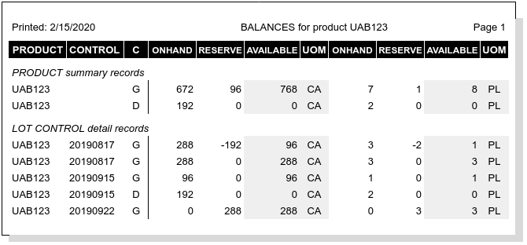
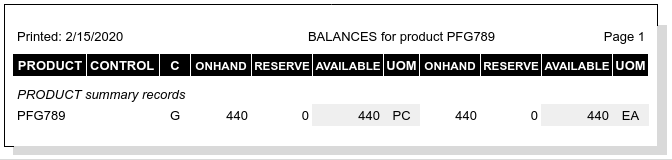

Inventory Balances Posting¶
WARES accumulates, or totals, posting quantity information by lot and product. The effect of this accumulation depends on the product Tracking Codes.
Inventory product and lot balances are stored in a balances table. Fungible items which are product-tracked (tracking=’P’) have one balances record, as these items do not use lot control. Items which are tracked by lot and unit will have a record for each lot control value in the inventory, plus one master balances record for the product itself, since product balance records omit lot control codes and values.
Posting Lot Balances Example¶
Suppose an account has the following three products:
Sample transaction line entries and the resulting balances are shown below.
Tip
Transactions do not include the product variety column, assuming it is null. Balances reports do not include inner units, assuming they are null.
UAB123 Transaction Posting¶
Product UAB123 has 4 lots in inventory, each consisting of 3 pallet units with 96 cases per pallet. One lot has two damaged units, and one lot is in transit. The oldest lot has two pallet units reserved for shipment. Transactions for this inventory might look like the following:
UAB123 Transactions¶
These transactions would post into inventory balances as shown following.
UAB123 Lot Balances¶
Note
- Each unit transaction posted twice: first to the product, lot control, and condition record, and then to the summary product and condition record.
- Column C shows the condition code of goods in inventory. Each used condition will have its own line in the balances.
- Balances with condition other than “G(ood)” are not included in product availability.
CDE456 Transaction Posting¶
Product CDE456, which is tracked by lot control but not by unit number, has 22 unit bundles in inventory. Two bundles have odd counts due to printing overruns or underruns.
CDE456 Transactions¶
Note
- Each transaction line represents one or more bundle units with a uniform condition code and count.
- Where the count per unit was over or under, a new lot control number was required to differentiate the count (e.g., JOB1342A versus JOB1342).
- To preserve the maximum number of uniform units, the partial withdrawal was taken from the overrun bundle. At most one unit should be partial at a time in any lot.
CDE456 Lot Balances¶
Note
Each transaction line posted twice: first to a product and lot control record, and then to the summary product record.
PFG789 Transaction Posting¶
Product PFG789 is 4-way whitewood pallets which are used to store and ship goods that are received floor-stacked in ocean containers. The warehouse receives pallets in truckloads of 400 each, while each ocean container they unload needs 40 pallets for product segregation and storage.
PFG789 Transactions¶
PFG789 Balances¶
Note
Each transaction line is posted to the product balance record only. Lots and control numbers are not used and do not exist for this product.
Lot Balances Columns¶
The database column schema for Balances is found at BALANCES Data Table Columns.